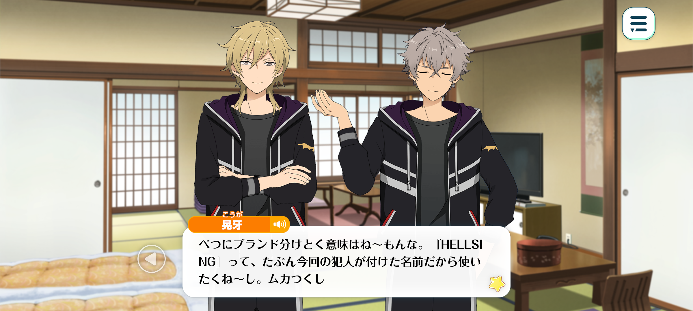
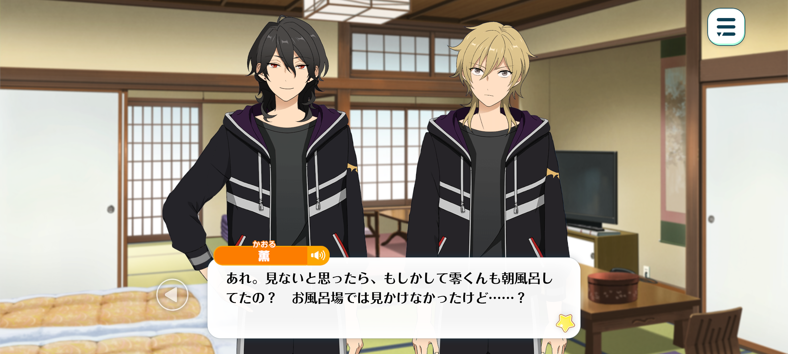
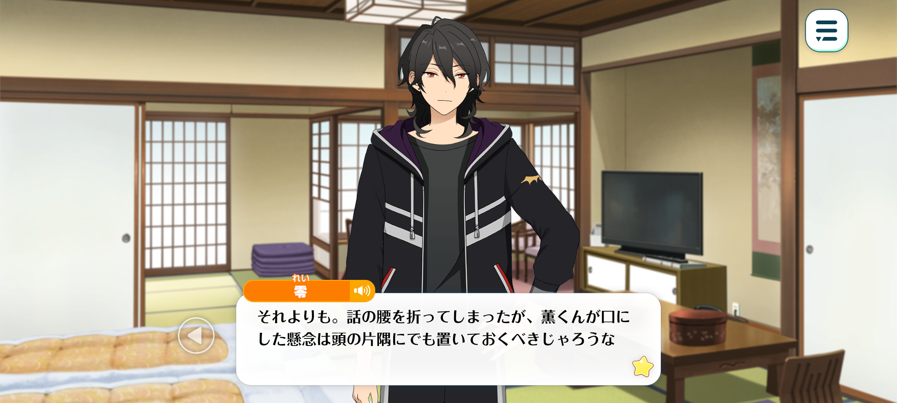

PSYCHOBREAK — Epilogue 2



Kaoru: Gramps was throwing a bit of a tantrum, saying he “hates complicated things”, so for the time being, we're just going to go by UNDEAD.
Koga: There's not much point in having two separate names for ourselves anyway. Besides, that criminal came up with HELLSING, so I don't wanna use it. Just thinking about it pisses me off.
Adonis: The delinquent probably had his own vision for what UNDEAD should be. HELLSING was his idea of what we ought to have been.
Kaoru: Yeah. He was probably thinking, “I can do UNDEAD better than anyone else!”
But we'll surpass his ideal without breaking a sweat. The real us are only going to shine brighter and brighter.
Adonis: That is easier said than done.
As Hakaze-senpai pointed out earlier, successfully pursuing both our radical, immoral style and our variety-show-oriented activities will be no easy feat.
Koga: Then why don't we just ditch one of them? I vote we get rid of the variety shows.
Kaoru: You really can't stand those sorts of jobs, can you? But like I said onstage yesterday, you can learn something from any experience.
You can’t grow big and strong if you’re a picky eater, you know?
Koga: Who d'you think you are, my parents? Anyway, I get what you're saying, but that doesn't mean I'm gonna stop complainin’.
Even if there's stuff I can't stand, I'll gobble it all up, digest the lot, and turn it into nourishment. That's how I'll get big!
Kaoru: That’s the spirit ♪
Let's do our best, 'kay? That whole AIIE experiment was just a sham the culprit cooked up to deceive us. It was all an empty façade, with nothing real behind it — like some kind of dream.
But we really did see robots that looked just like us, as well as the ones modelled after those kids from Ra*bits.
The fakes were almost indistinguishable from the real thing. At least, as far as appearances went.
And technology and AI are only going to keep advancing. AI idols will only become more and more realistic.

Rei: It would certainly seem that things are progressing in that direction
Kaoru: Oh? I was wondering where you'd got to. I thought you'd gone for an early-morning bath, too, but, then again, I didn't see you in the bathroom...
Rei: Nay. I was simply savouring the tranquil beauty of the early morning, taking a leisurely stroll.
I exchanged a few words with some of the neighbours who were already up and about, and when I grew weary, I found a bench nearby and basked in the warmth of the morning sun...
Kaoru: You really are such an old man, aren't you? You're getting more and more like one the more you force yourself to play the role.

Rei: Rather, I daresay I was merely pretending to be young all this time. I feel far more at ease with myself now than I did back then. Perhaps I am finally allowing my true nature to shine through.
Of course, those who knew me in my younger days would have glimpsed a certain immaturity in me, one only natural for a boy of that age.
But I digress. Forgive me for interrupting, but I believe you would all do well to keep Kaoru-kun's concerns in mind.
Humanity continues to evolve, and the boundaries of scientific possibility draw ever closer to the realm of the divine.
Robotics, artificial intelligence, virtual reality... Artificial idols are born from the convergence of all these technologies.
And what if, one day, these beings that are not human grow in strength and surpass us? What if monsters are born into this world, and before long, their existence becomes the new norm?
What, then, will become of us — we flesh-and-blood human beings? Will we have any worth beyond the simple fact that we are the original article?
Will we become little more than works of art, preserved behind glass in some distant museum? Objects no longer of any practical use, admired only for their beauty, their rarity, and the fact that they once lived?
I cannot claim to know what the future has in store for us. But that future is drawing ever nearer.
We stand at a crossroads.
Should we surrender, we shall perish where we stand. We must pour our hearts and souls into the endless pursuit of our own worth, and never cease striving to prove that we have a place in this world.
Time and time again, we must show the world that we are worthy of being loved.
For if we shrink from that challenge, we may soon find ourselves reduced to the same pitiful state as the culprit in this incident.
A wretched creature, forever gazing into the distance, consumed by envy for the brilliance of others.
What befalls one person today may well befall another tomorrow. And yet, I refuse to view the future with such despair.
For we are alive.
And so long as we continue to live, to change, and to grow, there is no reason to fear what this lifetime may bring.
That, I believe, is the true strength and beauty of being human. Wouldn't you agree, everyone?
Come, then. Let us cast aside the shadows of our abhorrent past, along with the nightmares that have haunted our hearts. Let us greet this new day with smiles upon our faces, and step boldly into the light.
～...♪